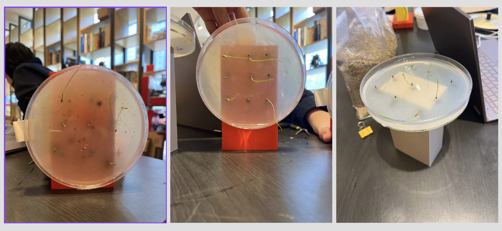
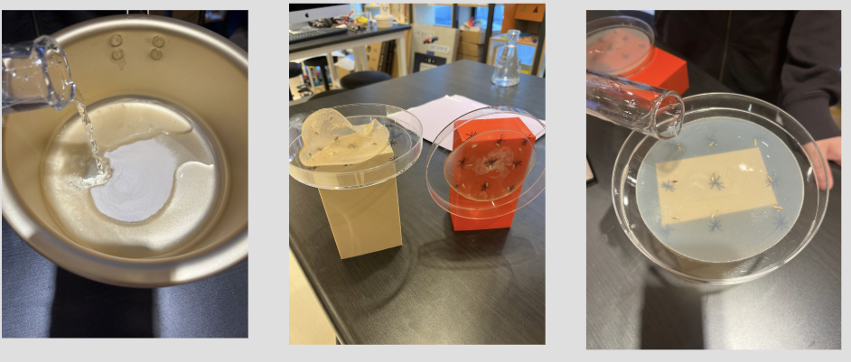

American Stem Prep · Plant Biology & Mechatronics Automation

This study investigates whether the direction of gravitational pull directly affects the directional growth patterns of plant roots. By utilizing an automated Arduino rotation system, we continuously altered the orientation of experimental seeds to disrupt their gravity perception.
To establish an uncompromised baseline where environmental factors are perfectly uniform, all seeds were cultivated within an identical growth medium environment. We tightly controlled localized moisture indices, structural boundaries, and ambient temperatures by equalizing the concentration profiles of our custom agar-agar solutions.
A rigorous seven-step laboratory preparation protocol was deployed to guarantee that the chemical composition and structural density of the growth medium remained perfectly uniform across both testing groups:
Root growth angles and elongation vectors were tracked systematically. The directional deviation variance indicates how far the roots veered away from a standard downward gravitational path.
| Experimental Group | Medium Consistency Status | Mean Growth Vector | Directional Realignment Rate |
|---|---|---|---|
| Static Control (Fixed Gravitational Path) | Verified Homogeneous | Downward (0° Baseline) | 96.4% Vertical Alignment |
| Arduino Rotated Group (Altered Gravitational Path) | Verified Homogeneous | Randomized / Curving | 14.2% Vertical Alignment |
The layout below details the motorized rotational framework and the solid-gel growth configurations used during testing.

The data compiled throughout this study strongly validates our research objective. Because the agar powder consistency, liquid proportions, moisture retention, and environmental temperatures were kept entirely identical, any alterations in root path geometry can be directly attributed to the changing directional vectors of gravity caused by the Arduino motor rig.